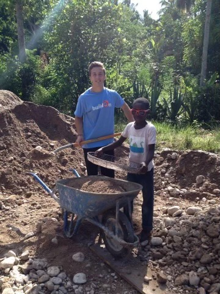
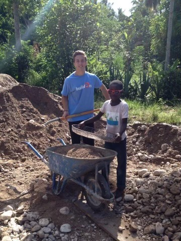

About
Joseph Ghisu is a magnanimous individual who cares deeply about the land known as the Pearl of the Antilles. As an adolescent, Joe, as he is affectionately called, travelled to Haiti and fell in love with the country and its people. He stayed there for a period of time, helping the community in anyway that he could. He was a volunteer for organization known as "buildOn". As an active member in this role, he participated in funding and building two schools in remote villages of Haiti. This act would help impact the litercy reate of those that reside in those remote villages. Although he was happy that he was able to make a positive impact, he wished he could make an even bigger impact but he was restricted financially at the time since he was a high school student.
 
